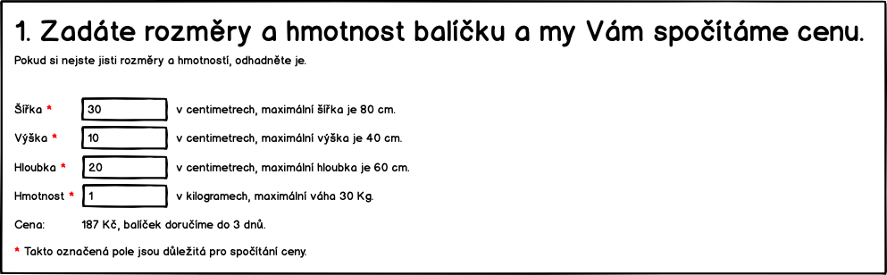

UC-04 Registrovat balik
Zakaznik objednava doruceni na cilovou adresu. Cely proces je rozdeleny do nekolika kroku. Finalne lze cele udelat na jedne strance.
Zakladni informace o zakaznikovy

Zakaznik zada:
- Jmeno a prijmeni - to vyuzijem pro pripadne zaslani na zpatecni adresu a osloveni v emailech.
- Email - na email budem posilat shrnuti objednavky s instrukcema kam zaplatit a poslat balik
- Telefon - Kdyz se neco pokazi support bude volat, aby domluvit dalsi postup.
Zadani zpatecni adresy

Zakaznik zada zpatecni adresu. Adresu muzem validovat, ze je vyplnena, ale ne, ze je platna.
Zadani cilove adresy

Zakaznik zada cilovou dorucovaci adresu. Nebudem validovat.
Poslani baliku k nam

Zde zákazním uvidí, jak má popsat balíček do naseho sberneho mista (depa), jaký balík kód.
Platba

Zakaznim muze vybrat, jak chce platit.
Zaver

Podekovani a informace o potvrzovacim emailu. Zaroven zakaznikovi odchazi email.
TODO: Obsah emailu
Budeme mu sem psat, ze kdyz neposle penize, tak balicek nedorucime?
Je potreba uchovavat jak postupne zadaval informace? Napriklad pro obvolavani nedokoncenych objednavek